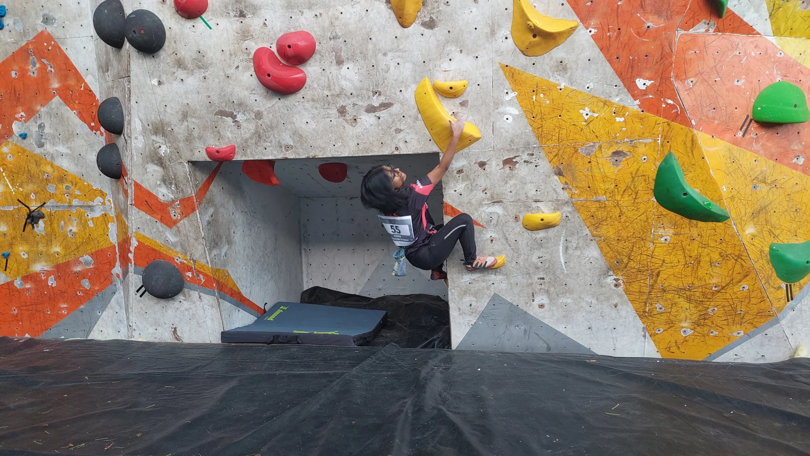
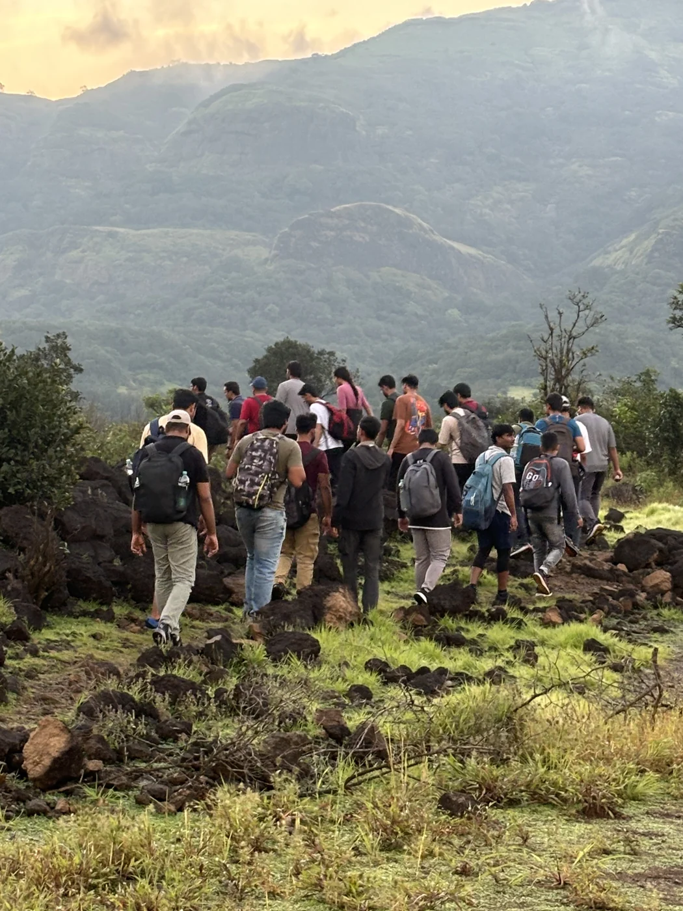
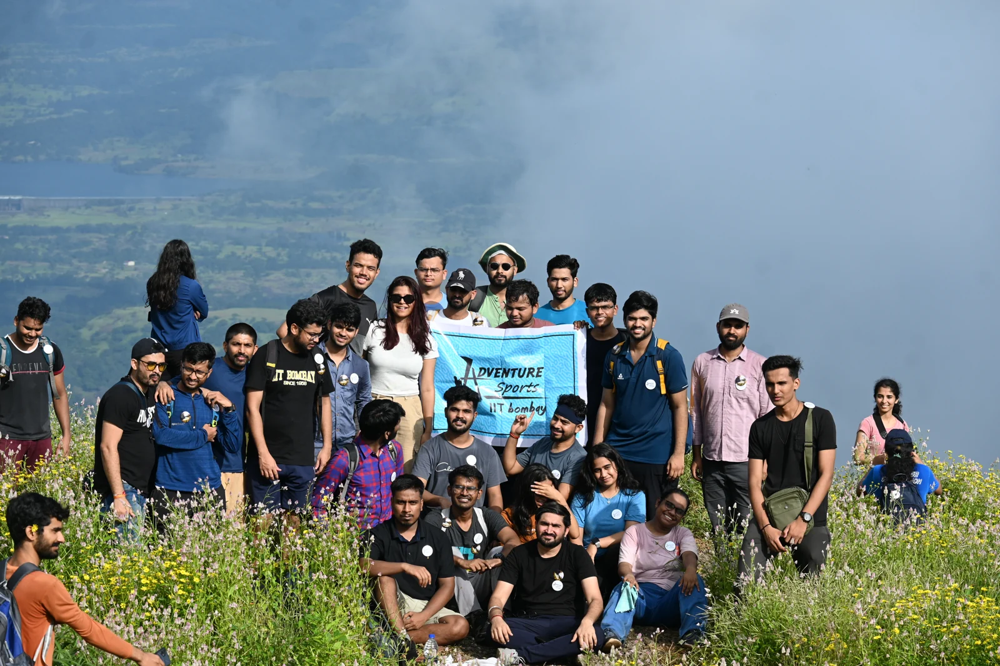
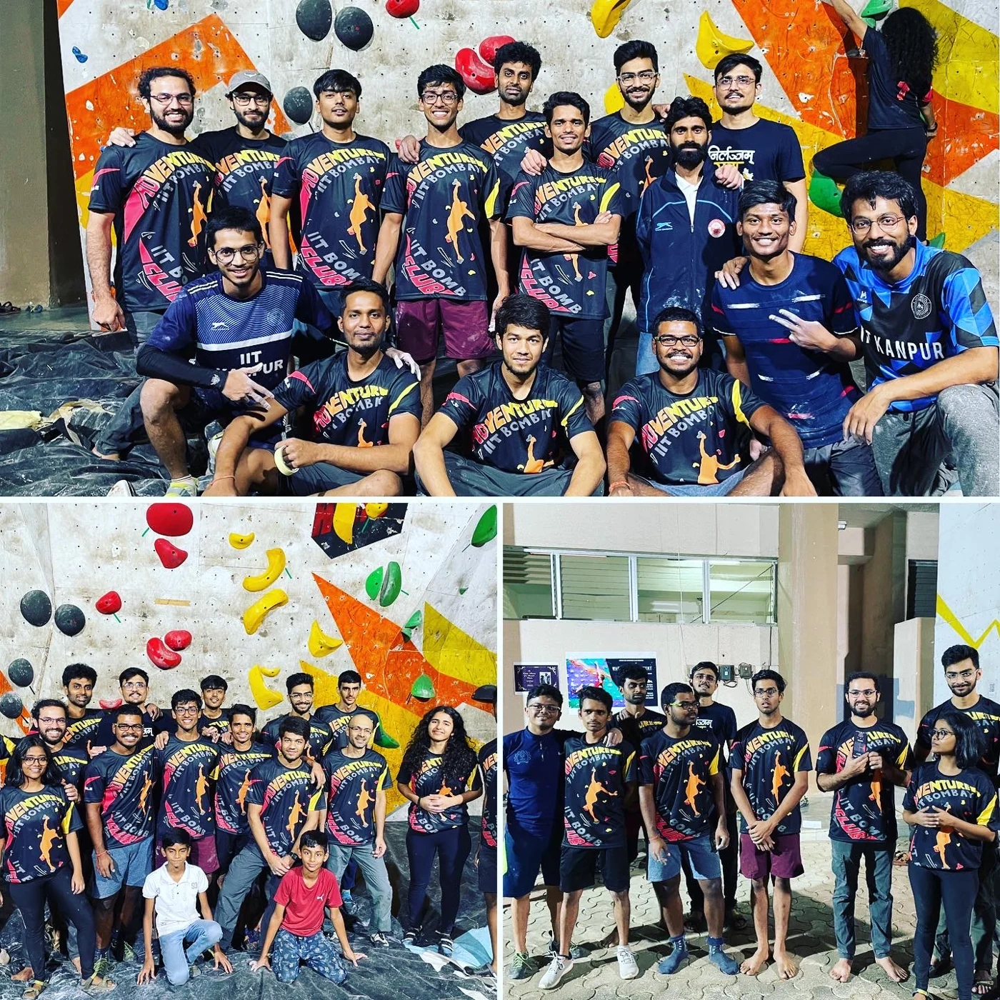
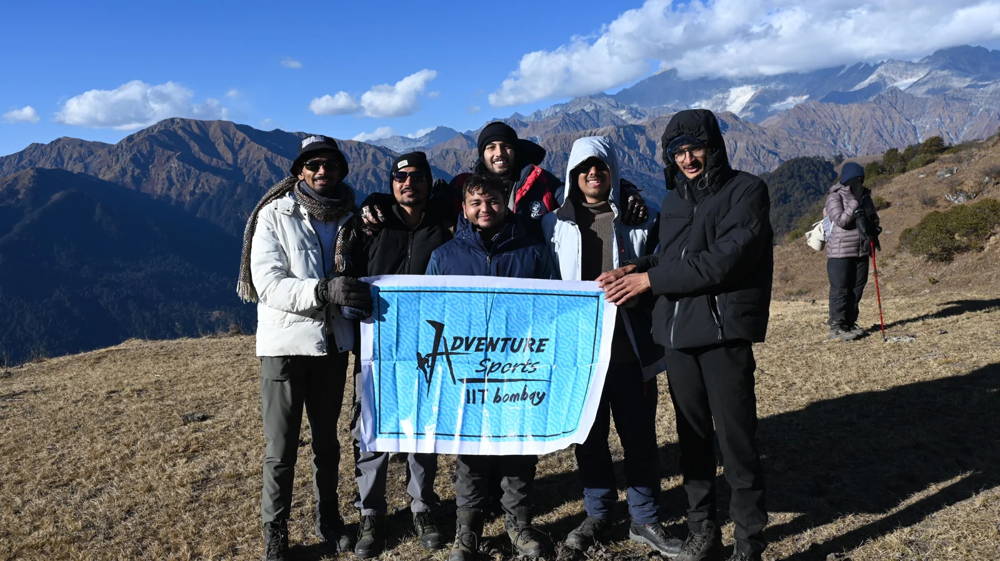

Beyondthe familiar.
A first foothold.
A path you haven’t taken.
Good people to go with.
Adventure Club · IIT Bombay
An imagined landscape.
A real community.
Start small.
Find something bigger.
A first climb. A new trail. A little more confidence with every step. Adventure Club brings climbing and trekking into campus life, with people to learn from and places to explore together.
A foothold
of your own.
Climbing begins with the next move. The club’s published introduction describes a bouldering wall near SAC, climbing shoes, crash mats and guidance for people at different levels.
Ask about a first session, the current practice arrangements and the people who can help you get started.
Facility and equipment descriptions come from the October 2026 archive. Confirm current access, equipment and supervision with the club.
Ask about climbing



A different
kind of weekend.
A shared trail can become a lasting memory. The club’s archive describes outings across varied terrain, from the Western Ghats to the Himalayas, with different levels of challenge.
Speak to the club about the current plans, the preparation involved and a suitable first outing.
These photographs and descriptions are archival. Current trips, dates, eligibility and arrangements need confirmation.
Ask about a trekThe landscape is an original illustration of adventure, rather than a map of a particular route.
Some views
stay with you.
A little further from the familiar.
A little closer to your people.
Better
with good company.
The climb, the walk and the view are only part of it. Adventure Club is also a community of people who show up for one another, share what they know and make room for a first attempt.
Find your starting point with the club, whether you’re curious about the wall or your next walk beyond campus.
Meet your next adventure

The first step
is a conversation.
Ask about climbing, trekking, current sessions or where to begin. The club can help you find the right starting point.
The named contact is from the institutional snapshot of 18 October 2026. Confirm the current office-holder before reaching out.
Contact the sports officeMohit
Institute Adventure Club Secretary
Institutional archive, October 2026
For the latest club information, check the institutional page ↗.
Worth going
together.
Climbs, walks and people from the Adventure Club archive. Open a photograph to take a closer look.




Keep discovering
Dark Knight Chess Club ↗